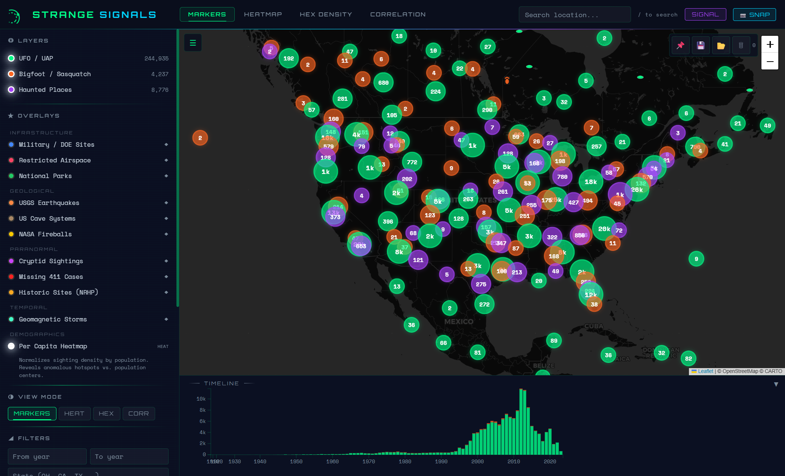
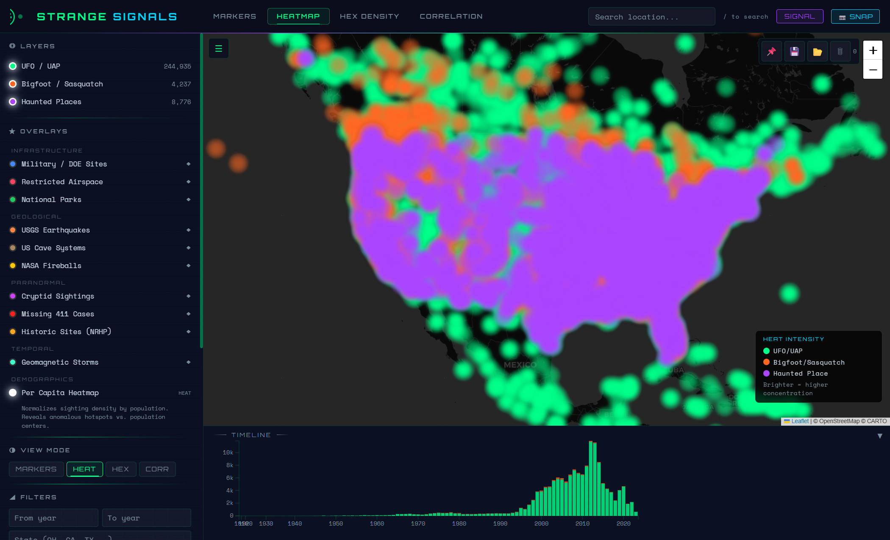
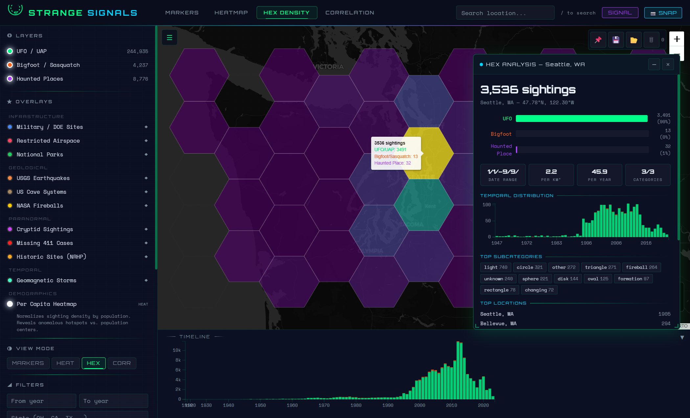
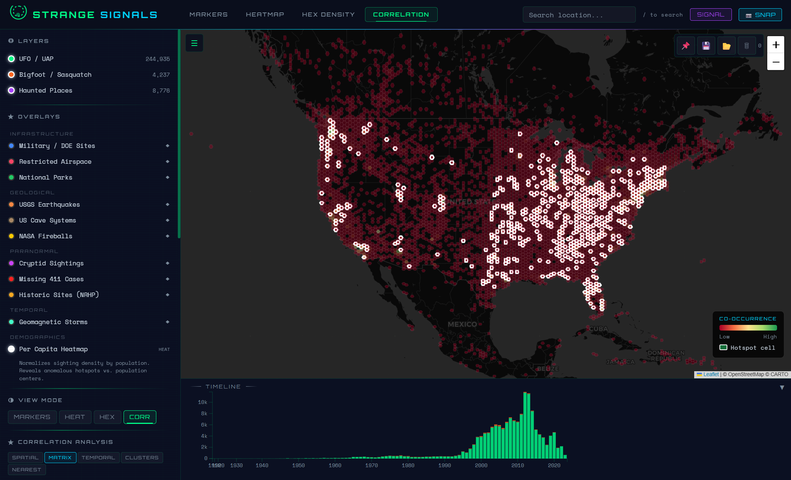
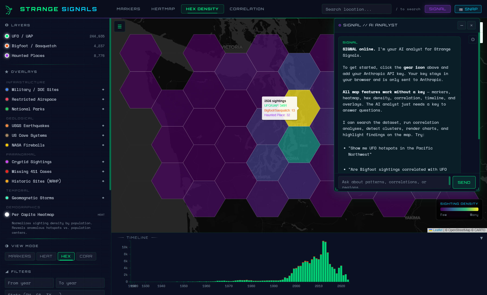
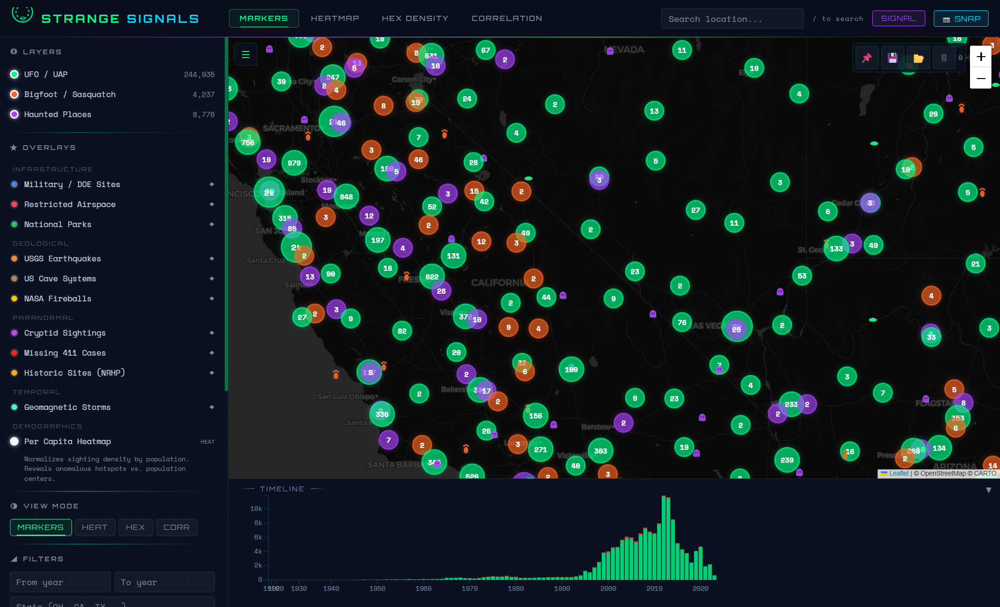
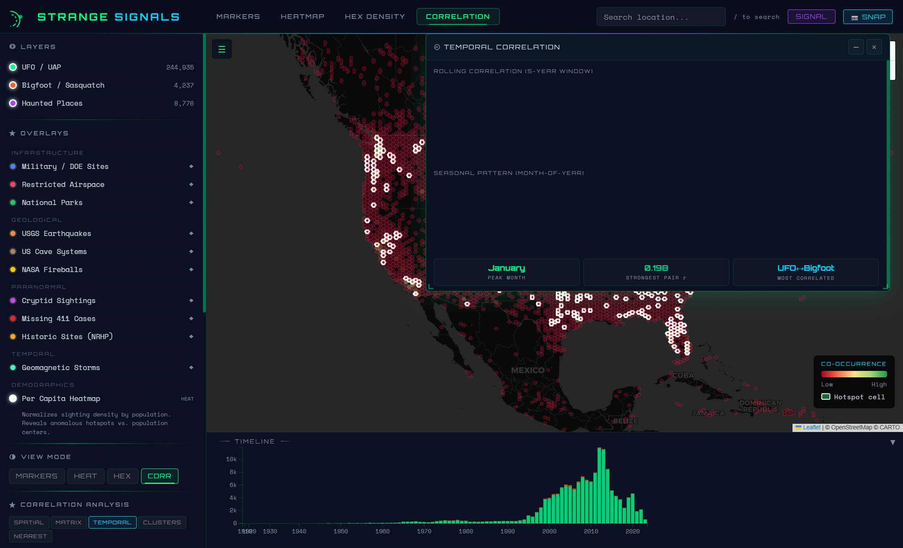

Interactive paranormal sightings correlation map. 258,000+ geocoded reports across UFO/UAP, Bigfoot, and Haunted Places — with spatial analysis, overlay datasets, and an AI research assistant.

Color-coded pins for UFO (green), Bigfoot (orange), and Haunted Places (purple). Click any sighting for full details with proximity analysis showing nearby reports of other types.
Category-colored heat visualization showing where reports concentrate. Toggle individual layers to isolate patterns. Includes per-capita normalization mode.
Hexagonal binning with viridis color scale. Click any hex for deep analysis: category breakdown, temporal distribution, subcategory tags, and density statistics.
Five analysis sub-modes: spatial Pearson correlation, all-pairs matrix, temporal rolling window, BFS cluster detection, and nearest-neighbor distance analysis.






| Layer | Records | Description |
|---|---|---|
| Military / DOE Sites | 45 | Major military installations and Department of Energy facilities |
| Restricted Airspace | 105 | MOAs, prohibited zones, and restricted areas with altitude data |
| USGS Earthquakes | 20,000 | Significant US earthquakes with magnitude and depth |
| US Cave Systems | 104 | Notable cave systems with type and length data |
| NASA Fireballs | 29 | Confirmed fireball/bolide events with energy and velocity |
| Cryptid Sightings | 105 | Non-Bigfoot cryptid reports (Mothman, Chupacabra, etc.) |
| Missing 411 | 71 | Unexplained disappearances in wilderness areas |
| Geomagnetic Storms | 92 | G3+ solar storms displayed as temporal bands on timeline |
Ask questions like "Show me UFO hotspots near military bases" or "Are Bigfoot sightings correlated with cave systems?" SIGNAL translates your questions into map actions.
SIGNAL can run spatial correlations, detect clusters, apply filters, toggle overlays, and navigate the map — all from a conversational interface.
Generate downloadable HTML investigation reports with findings, charts, and analysis summaries. Reports are self-contained and can be shared offline.